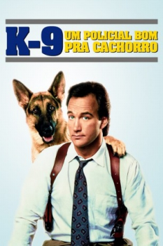

K-9 - Um Policial Bom Pra Cachorro (1989)


Um Policial Bom Pra Cachorro

Avaliação (TMDb):


6.0/10 (659 votos)
Avaliação (Usuário):
Outro Título:K-9
País:United States, 101 minutos
Idiomas falados:Inglês, Espanhol, Português
Gênero(s):Ação, Comédia, Crime
Diretor(s):Rod Daniel
Codec:MPEG-2 (DVD)
Número: 2765
Sinopse:
Detetive desacreditado se une a cão pastor policial para resolver um caso de tráfico de drogas. A união de personalidades tão distintas resulta em grande - e esperada - confusão.
Elenco:
Jim Belushi, Mel Harris, Kevin Tighe, Ed O'Neill, Rando, Daniel Davis, Cotter Smith, John Snyder, Pruitt Taylor Vince, James Handy
Tipo de mídia: DVD5,
Legendas: Inglês, Espanhol, Português
Alugado: Não
Tela: 1.85:1